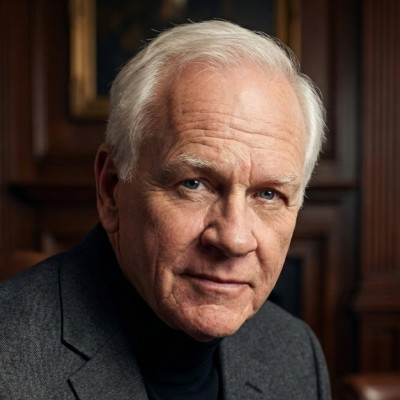

About Fork Commons
An emerging home for public-interest software: a permanent place for free software that can't be taken away from the people who depend on it.
An emerging home for public-interest software: a permanent place for free software that can't be taken away from the people who depend on it.
Open-source code is a beginning, not an institution. Keeping essential software useful for decades takes maintenance, governance, documentation, security, money, and a way for communities to cooperate.
Fork Commons is that institution. It holds the code and the name in trust, keeps every product honest about its status, and makes sure that when one community builds something useful, the next one can take it, improve it and share it back.
Filings, funding and spending will be published here once there are any.
Scott Converse has spent forty years building the stage other people perform on.
He was never the best player in the room. In high school his best friend was the better artist and the better musician. Scott ran the art club and the drama club and built the sets. The pattern held for the rest of his career: find the system that's broken, work out how the pieces fit, and build the thing everyone else gets to use.
He has shipped products at every platform shift. At Apple he co-founded the eWorld group, led its client software, and on the side ran OneNet, a network of more than a thousand bulletin board systems with over a million members, before most people had heard of the internet. He was the founding executive of Paramount Digital Entertainment, built high-speed wireless software at Motorola, and ran strategy at MCI. Then he founded ClickCaster, one of the first podcasting services, and Medioh, a broadband TV platform that Nagravision acquired and Samsung built its smart TV apps on.
Then he came home to Longmont and started building for his town. In 2013 he held a meetup to see whether Longmont wanted a makerspace. Five people came. He built TinkerMill anyway, and it grew into one of the largest makerspaces in the country. He co-founded the Longmont Observer, a nonprofit local newsroom, and Longmont Public Media, one of the last independent public access stations in Colorado, where he still serves on the board.
In his mid-fifties he decided he had enough money and stopped chasing more. Since then he has built what nobody will pay to build because it needs to exist. Fork Commons is where that work now lives, held in trust so it outlasts him.
His philosophy fits in two words, said happily while looking up at the sun: nothing matters. If nothing matters in the cosmic sense, you're free to choose what does. He chose infrastructure, community, and the stubborn belief that broken systems can be replaced with better ones.
